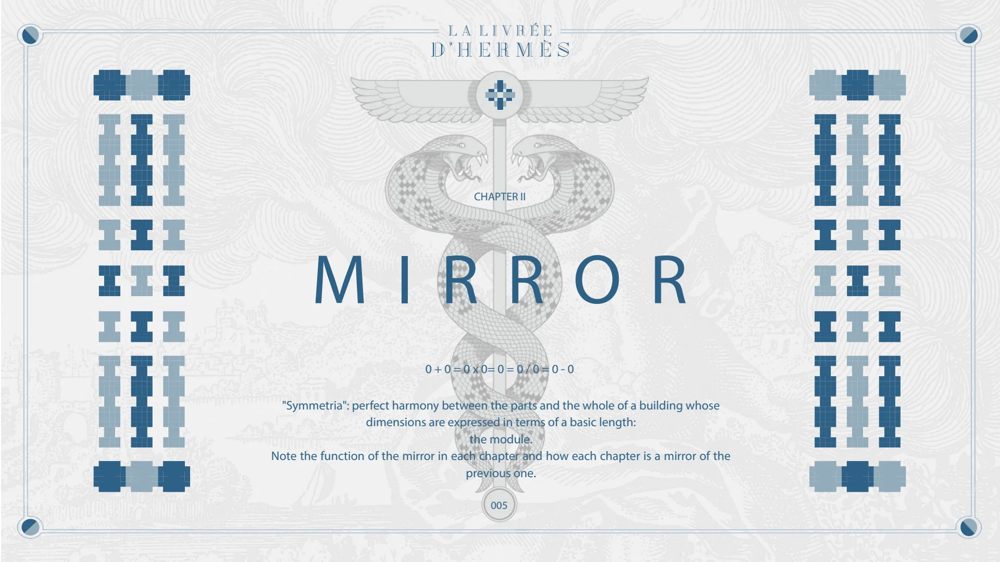
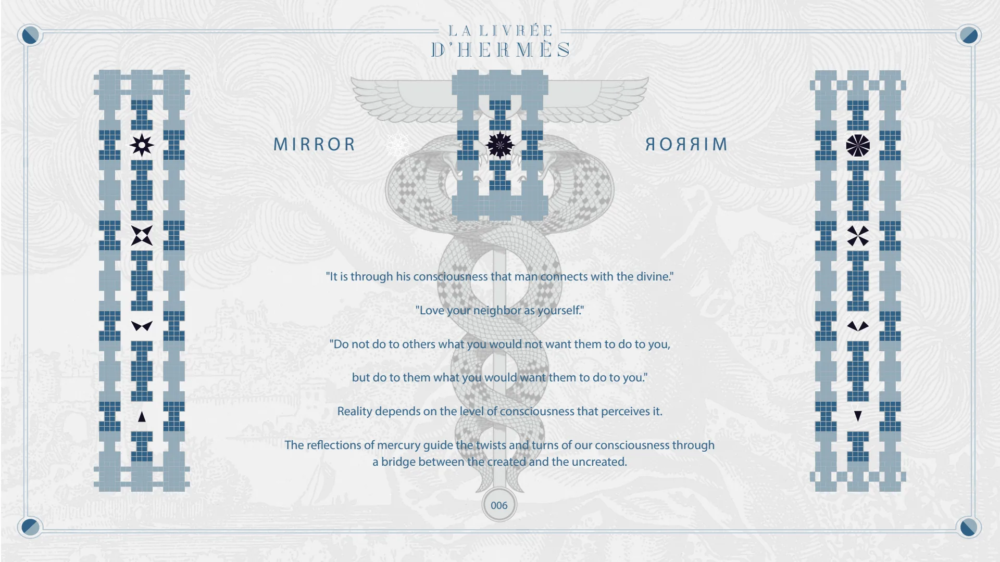
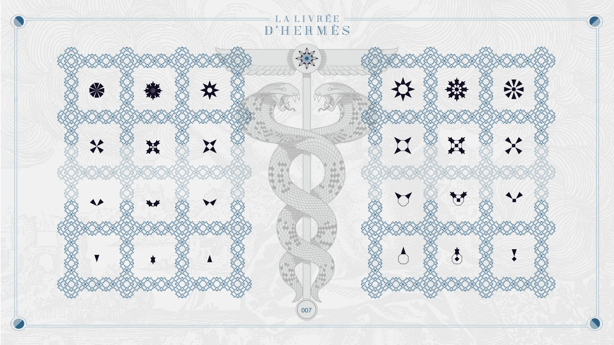
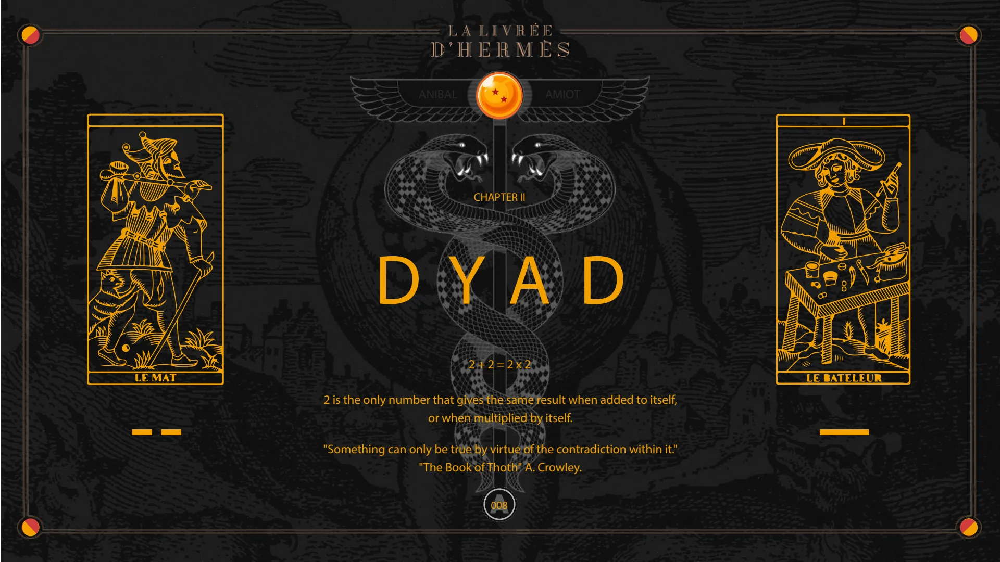
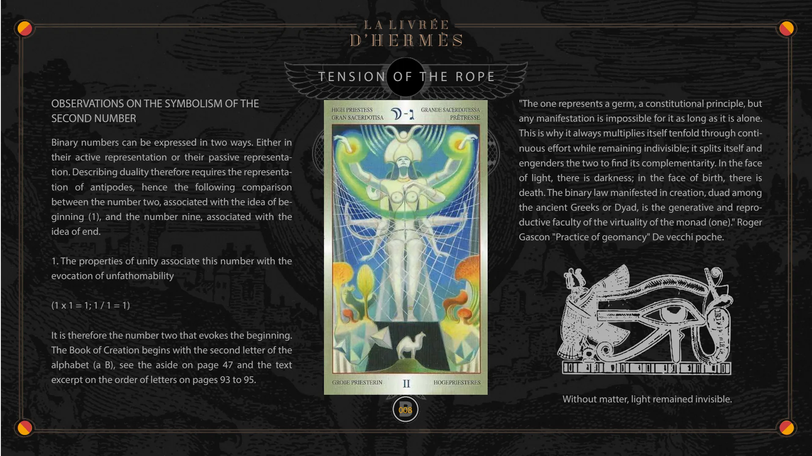
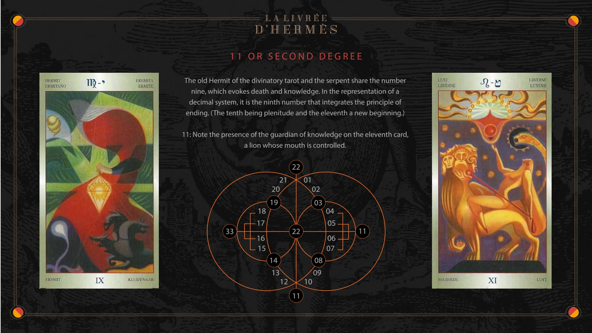

Chapter II — Mirror, Dyad
Pages 005 to 008C of the book · chapter 2 of 8
Chapter II of La Livrée d'Hermès: Mirror and Dyad. Symmetry, two as the only number that gives the same result when added to itself or multiplied by itself, and the symbolism of the second number.

CHAPTER II
MIRROR
0 + 0 = 0 x 0= 0 = 0 / 0 = 0 - 0
"Symmetria": perfect harmony between the parts and the whole of a building whose dimensions are expressed in terms of a basic length: the module. Note the function of the mirror in each chapter and how each chapter is a mirror of the previous one.
005

MIRROR
MIRROR
"It is through his consciousness that man connects with the divine."
"Love your neighbor as yourself."
"Do not do to others what you would not want them to do to you, but do to them what you would want them to do to you."
Reality depends on the level of consciousness that perceives it.
The reflections of mercury guide the twists and turns of our consciousness through a bridge between the created and the uncreated.
006

007

CHAPTER II
DYAD
2 + 2 = 2 x 2
ANIBAL
AMIOT
2 is the only number that gives the same result when added to itself, or when multiplied by itself.
"Something can only be true by virtue of the contradiction within it." "The Book of Thoth" A. Crowley.
A 008

TENSION OF THE ROPE
OBSERVATIONS ON THE SYMBOLISM OF THE SECOND NUMBER
Binary numbers can be expressed in two ways. Either in their active representation or their passive representation. Describing duality therefore requires the representation of antipodes, hence the following comparison between the number two, associated with the idea of beginning (1), and the number nine, associated with the idea of end.
1. The properties of unity associate this number with the evocation of unfathomability
(1 x 1 = 1; 1 / 1 = 1)
It is therefore the number two that evokes the beginning. The Book of Creation begins with the second letter of the alphabet (a B), see the aside on page 47 and the text excerpt on the order of letters on pages 93 to 95.
B 008
"The one represents a germ, a constitutional principle, but any manifestation is impossible for it as long as it is alone. This is why it always multiplies itself tenfold through continuous effort while remaining indivisible; it splits itself and engenders the two to find its complementarity. In the face of light, there is darkness; in the face of birth, there is death. The binary law manifested in creation, duad among the ancient Greeks or Dyad, is the generative and reproductive faculty of the virtuality of the monad (one)." Roger Gascon "Practice of geomancy" De vecchi poche.
Without matter, light remained invisible.

1 1 OR SECOND DEGREE
The old Hermit of the divinatory tarot and the serpent share the number nine, which evokes death and knowledge. In the representation of a decimal system, it is the ninth number that integrates the principle of ending. (The tenth being plenitude and the eleventh a new beginning.)
11: Note the presence of the guardian of knowledge on the eleventh card, a lion whose mouth is controlled.
33 18 17 16 15 21 20 19 14 13 12 22 22 11 01 02 03 10 08 09 04 05 06 07 11
© Anibal Edelberto Amiot. CC BY-NC 4.0 — creativecommons.org/licenses/by-nc/4.0 · DOI 10.5281/zenodo.22722485